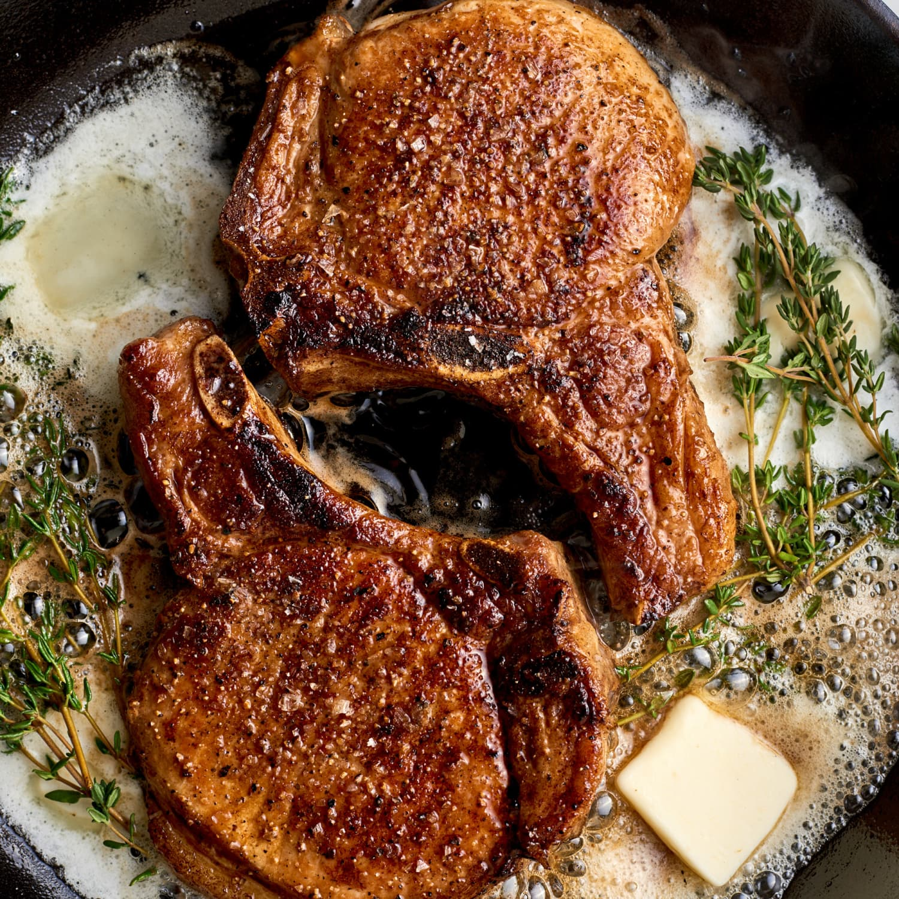

Pan-Fried Pork Chops

Few things are as easy to prepare as these pan-fried boneless pork chops.
They take only minutes to prepare! The emphasis is on the great flavor of pork, so if you'd like more seasoning, go for it. For perfectly done chops, always use a meat thermometer.
Ingredients:
- 4 boneless pork chops, 3/4-inch thick
- Salt and freshly ground black pepper to taste
- 2 tablespoons all-purpose flour
- ½ cup cooking oil
Directions:
- Do not pat chops dry, so seasonings and flour will stick.
- Season both sides of pork chops with salt and pepper, then sprinkle with flour on both sides.
Use the back of a spoon to distribute the flour over the entire surface.
- Heat oil in a 12-inch non-stick skillet over medium heat until it shimmers.
Carefully add pork chops and pan fry until brown, about 4 minutes.
Do not disturb the chops until ready to turn.
- When you see the edges of the chops turn brown, turn, and pan fry the other side until no longer pink on the inside and brown on the outside, an additional 4 minutes.
An instant-read thermometer inserted into the center should read 145 degrees F (63 degrees C).
Reduce heat, if they are browning too quickly.
Serve warm.
Cook's Notes:
You can season the pork chops the way your family likes them the best! Garlic salt, onion salt, or any seasoned salt may be used, if desired. Dried herbs may be added to the flour, for extra flavor.
Thicker chops will take longer to cook, thinner chops will take less time. Use a meat thermometer and do not overcook.
Main Page